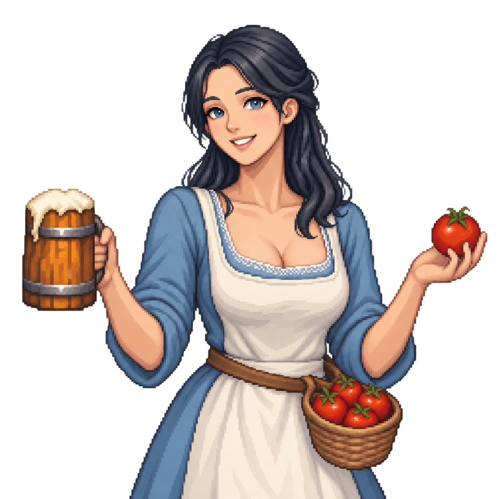
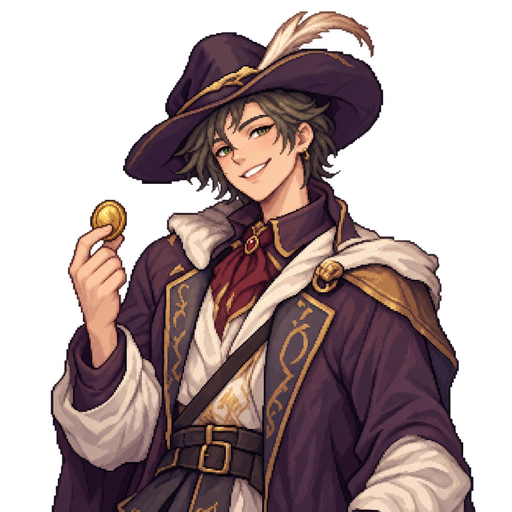

화면을 누르면 건너뛰어요
STUDY QUEST
최소 25분 원칙이에요. 그 이상은 자유롭게 늘려도 좋아요.
토마토 정령
아래 "오늘의 기록"에서 고른 과목·스탬프를 자동으로 모아 보여줘요. 단원까지 자세히 남기고 싶을 때만 "공부 기록"에 직접 적으면 더 정확해져요.
오늘의 핵심 미션 (최대 3개)
바꾸면 오늘부터 적용돼요. 지난 날짜의 달성 여부는 그대로 남아요.
0 / 6개 달성
아침녘 05–12시 · 낮뜨락 12–19시 · 달무리 19–05시(익일) 기준이에요,
오늘 나는 어떤 사람이었나요?
관문 기간과 유형을 정한 뒤, 공부 스탬프로 관문을 돌파해요.
A sound mind in a sound body — 체력 스탯이 올라요.
골드를 나눠 투자해 마을을 키워요. 완공하면 새 메뉴·진열·게시판이 열려요.

골드로 소모품을 사보세요. 효과는 오늘 자정까지 이어집니다.

“흥정은 내가 하지. 자네는 계획만 잘 세워오면 돼.”